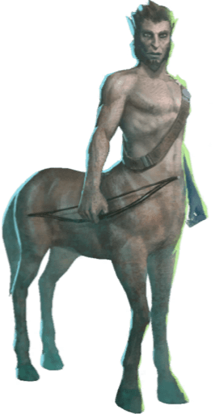
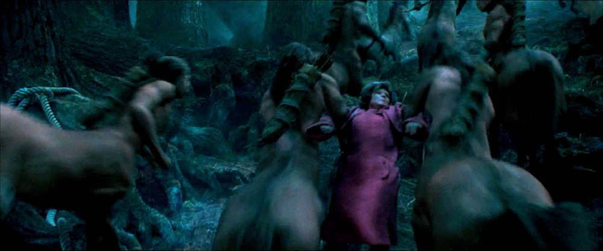
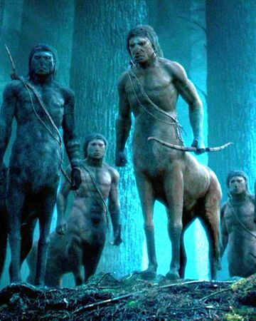

Centaur Looks and Behavior
-
Looks: A Centaur is a magical creature whose head, torso, and arms appear to be human and are joined to a horse's body. They are, however, their own individual species, and thus are not half-breeds. Like horses, centaurs can come in a variety of colours, ranging from deep black to white.
 -
Behavior: Centaurs are not in fact half-breeds, but an entirely different species on their own. They are not very pleased to be insulted, particularly where their lineage is concerned, as Dolores Umbridge found out the hard way. Centaurs are known to be gifted in Divination. Indeed, the centaurs of the Forbidden Forest regularly made vague allusions to seeing the future, as when the centaur Firenze told Harry Potter that they were fated to meet again, and when he and Bane spoke of the "intermission" of sorts, between the First and Second Wizarding Wars. He also mentioned to his class at Hogwarts, that centaurs spend years trying to master their particular art of divining the fates. In 1995, they attempted to murder Firenze for his decision to "enter into human servitude," which was seen as a great and base betrayal. Centaurs also seem to favour nature over technology, the extent of their tools visibly in use being their bows and arrows. Instead, they cast their attention upon reading signs in nature, and living in forests appropriated by the Ministry of Magic. They are territorial creatures by nature, as Rubeus Hagrid mentioned in 1995, upon seeing a herd of centaurs in the Forbidden Forest, whose land was being consistently reduced, and that they might revolt against the Ministry as a result. Later the same year, they proclaimed that even Hagrid was "no longer welcome" within "their" forest, as he had "forfeited the friendship of the centaurs," and that their "tolerance was waning" (in reference to Hagrid's half-brother, Grawp, whom Hagrid was hiding in the forest at the time). Centaurs do have a sense of honour, being unwilling to harm the young, as the herd within the Forbidden Forest refused to harm Hagrid due to the young Harry Potter and Hermione Granger accompanying him at the time. However, this patience and generosity can wane, as later they saw Harry and Hermione deliberately lead Dolores Umbridge into the forest to "use" the centaurs to eliminate her; this, along the fact that both teenagers are nearing their adulthood, led the herd to attempt to attack the two.

Centaur Abilities
-
Centaurs do not use wands for magic, but are known to be well-versed in magical healing, Divination, archery, and Astronomy. Centaurs burn herbs such as mallowsweet and sage to refine their stargazing findings. In fact, the centaur Firenze taught Divination at Hogwarts, starting in the 1995–1996 school year. They also can perform non-verbal magic while duelling, as shown when Torvus duelled against Jacob's sibling without a wand or an arrow.
